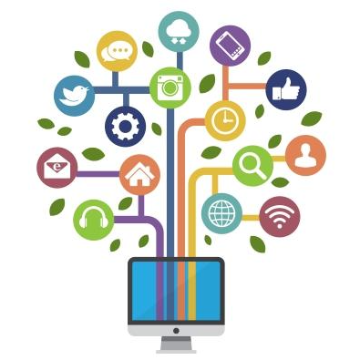
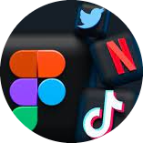

Reflecting Identity
The media has long played a role in influencing how people construct and perceive the world. Media has
influenced how people construct their thoughts, most often their perception towards someone. Youth in
particular, have been presented in a variety of ways in the media.

Opportunity To Keep In Touch
The importance of social media in communication is a constant topic of discussion. Online communication
has brought information to people and audiences that previously could not be reached. It has increased
awareness among people about what is happening in other parts of the world.

Establishing New Contacts
Social media has given us the amazing ability to connect with people on the internet and turn them into
friends. Many strong bonds have been forged through shared hobbies and interests. Facebook lets you
search for and join various groups and communities where you can chat, post questions, and engage with
other people.
Promotion
Promotion is a marketing tool, used as a strategy to communicate between the sellers and buyers. Through
this, the seller tries to influence and convince the buyers to buy their products or services. It
assists in spreading the word about the product or services or company to the people.
Connect With Entire World
Social media has revolutionized the way we connect with the world. With just a few clicks, we can now
interact with people from all corners of the globe, share our thoughts and ideas, and stay updated on
current events in real-time. It has made communication faster, more accessible, and more efficient than ever
before. Social media has truly connected the entire world, breaking down barriers and bringing people closer
together. However, it's important to use social media responsibly and thoughtfully to ensure that it
continues to be a positive force for connection and communication.
Get Connected ➜
World's Top Media Platforms
Simple Way to CONNECT With People
Facebook

Instagram

Twitter